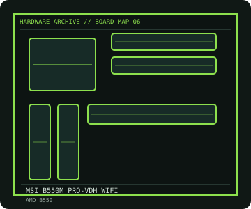

[ INDIVIDUAL COMPONENT // MOTHERBOARDS ]
MSI B550M PRO-VDH WIFI
MicroATX B550 board with four DDR4 DIMMs, two M.2 sockets, Wi-Fi 6 and CPU-list-dependent Ryzen support. This entry identifies one product model; revision and firmware qualifications are stated below.

IDENTIFICATION: Check the PCB silkscreen, printed revision, assembly code, and firmware identifier on the actual board. Similar model names and PCB revisions may use different specifications or firmware.
Specifications
| Catalog subcategory | Modern AMD platforms |
|---|---|
| Exact board / model | MSI B550M PRO-VDH WIFI |
| Era / platform | AMD AM4 B550 microATX platform, 2020 |
| CPU and socket | AMD Socket AM4 Ryzen desktop processors as listed by MSI; generation support and minimum BIOS vary by exact CPU |
| Chipset / controller | AMD B550 |
| Memory | Four DDR4 DIMM slots, dual-channel, up to 128 GB; speed and ECC behavior depend on CPU and supported DIMM configuration |
| Expansion and connectivity | MicroATX; PCIe 4.0 x16 primary slot with supported Ryzen CPUs, secondary x16-length PCIe 3.0 x4 and two x1; two M.2 sockets, four SATA 6 Gb/s, 2.5-Gigabit Ethernet, Wi-Fi 6/802.11ax and Bluetooth |
| Firmware | MSI Click BIOS 5; CPU support and flashback/update steps are version-specific. Consult the exact board CPU support table before fitting newer AM4 processors. |
Compatibility and revision notes
Do not assume all AM4 CPUs/APUs are supported. The top M.2 and PCIe generation depend on CPU; the second M.2/SATA options may share resources. Fit the correct Wi-Fi antenna leads and use the manual's DIMM population order.
Physical socket fit alone does not establish compatibility. Verify the exact processor support list, minimum BIOS, memory population rules, case dimensions, power connectors and shared-lane behavior in the cited model documentation before installation.
Preservation and repair
Inspect AM4 socket pins on the CPU (the socket is pin-grid-array), board VRM heatsink contact, M.2 standoffs and rear-I/O Wi-Fi antenna connectors. Use BIOS Flash BIOS instructions only for this exact board model and retain stable power throughout firmware recovery.
For an archive record, photograph the PCB and labels before cleaning; note serial/date codes, BIOS/BMC versions, accessories, known faults, repairs, and test conditions. Use ESD-safe handling and never apply power with loose conductive hardware beneath the board.
Sources & further reading
- MSI — B550M PRO-VDH WIFI specificationsManufacturer specification table for the exact model.
- MSI — B550M PRO-VDH WIFI supportManuals, BIOS files and CPU support references.
Manufacturer model documentation is the primary reference; confirm the document revision and board markings when specifications vary by revision or SKU.